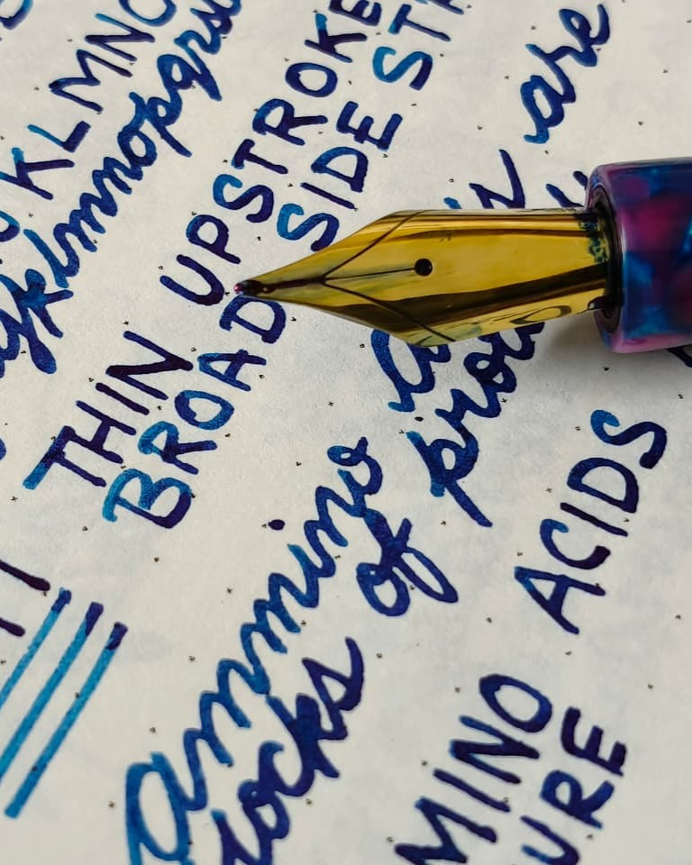

Featured Works
Selected Transformations

Architect Grind
Precision-crafted line variation optimized for print handwriting.

Vintage Restoration
Restoring historic nibs while preserving their original character.

Cursive Italic
Smooth daily usability paired with elegant crisp variation.